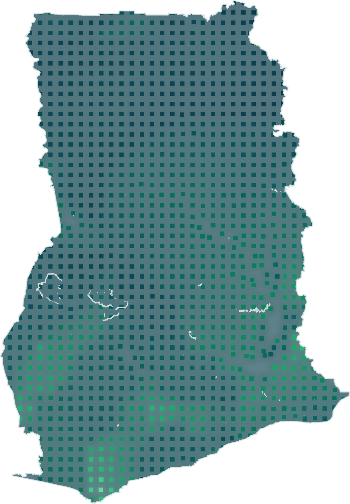
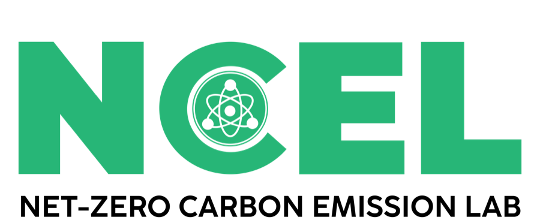

01
National reconnaissance
Integrate consistent national evidence to identify locations and environmental gradients that warrant more detailed investigation.
KNUSTRocks is being developed under the KNUST Rock Enhanced Weathering project to support national reconnaissance, field-validation planning and locally relevant monitoring, reporting and verification research.

KNUSTRocks provides a structured starting point for ERW research in Ghana. It helps identify environmental contrasts, organise validation priorities and define the evidence required before any project-level conclusion can be made.
Integrate consistent national evidence to identify locations and environmental gradients that warrant more detailed investigation.
Use contrasting mapped conditions to plan representative soil, feedstock, agronomic and environmental sampling programmes.
Connect reconnaissance evidence to baseline design, carbon attribution, lifecycle accounting and independent assurance requirements.
The project progresses from spatial prioritisation through physical characterisation and field testing to locally appropriate verification research. Each stage is designed to constrain the claims that can be made at the next.
National screening, uncertainty assessment and selection of contrasting validation settings.
Representative feedstock mineralogy, geochemistry, reactivity, safety and supply-chain evidence.
Baseline measurement, controlled experiments and field trials across relevant Ghanaian conditions.
Carbon attribution, fate, leakage, lifecycle emissions, uncertainty and independent assurance.
The current framework evaluates the relative co-location of selected national evidence. It does not establish verified carbon removal, feedstock safety, quarry reserves, land eligibility, deployment economics or crediting readiness.
The research model distinguishes the environmental context for weathering, potential agronomic co-benefit and preliminary mapped access to candidate feedstock.
Broad precipitation and temperature conditions used for national comparison—not a weathering-rate or carbon-removal model.
Soil acidity and cation-retention conditions relevant to planning agronomic investigation—not evidence of measured crop response.
Reconnaissance-scale proximity to candidate mapped lithologies—not mineralogical qualification, quarry inventory or road logistics.
The full analytical platform is being retained for structured scientific review while the research team advances publication, partnership and field-validation activities.
This page communicates the project purpose, evidence boundaries, research status and collaboration pathway. It intentionally excludes the complete model dataset and unpublished analytical results while scientific and institutional reviews are in progress.
Contribute specialist capability in feedstocks, soils, agronomy, geochemistry, modelling, lifecycle assessment or MRV.
Support representative sampling, logistics evidence, trials, monitoring systems and responsible local implementation research.
Support independent validation, research infrastructure, institutional coordination and transparent public-interest evidence.
NCEL welcomes discussions with research institutions, funders, feedstock and quarry specialists, agronomists, geochemists, MRV practitioners, public institutions and responsible project developers.
KREW is NCEL's coordinated research programme for enhanced rock weathering, spanning national prioritisation, feedstock characterisation, field validation and MRV research.

Net-Zero Carbon Emission LaboratoryNCEL is a specialised research hub at KNUST developing rigorous, science-based and data-driven solutions in decarbonisation and climate resilience.